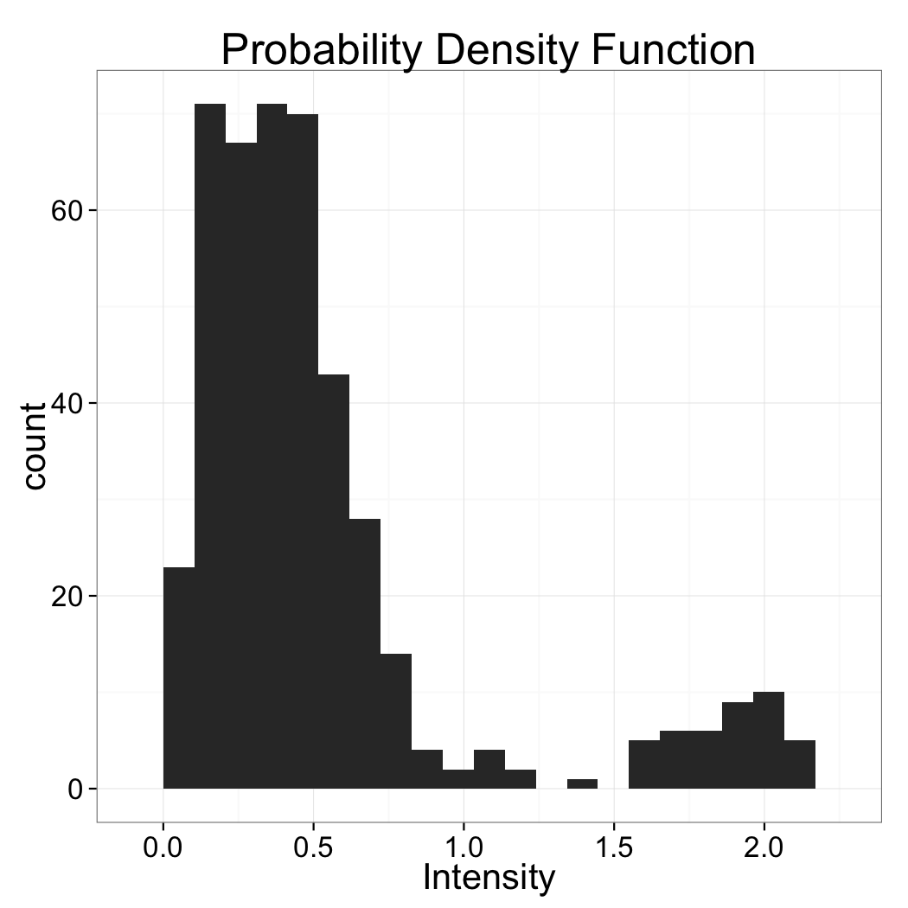
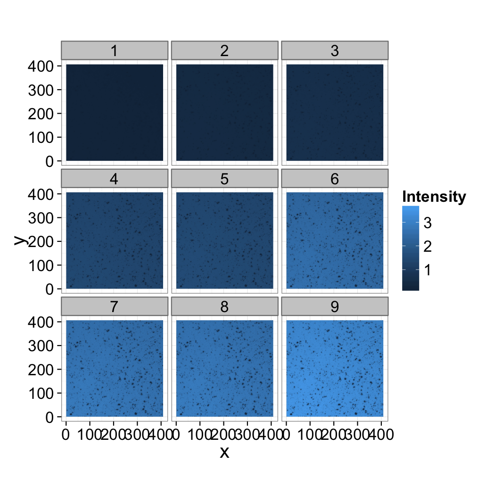

The quiz is not graded but it will help you identify which areas to better review. It is also good preparation for the next section since the course builds on itself the better you understand the first lectures the easier the subsequent ones will be.
Introductory Material Quiz
Image Enhancement - Advanced Segmentation
Kevin Mader
Lecturer, ETH Zurich
Enhancement and Segmentation Quiz
Choosing a threshold

Based just on the distribution above which value would make the most sense for the threshold
- 0.5
- 1.0
- 1.75
The value 1.0 lies best between the two peaks of the distribution
Morphological Operations

Looking at the before and after images, which morphological operation was most-likely performed and what was the range
- Erosion, 3x3
- Dilation, 3x3
- Opening, 3x3
- Closing, 3x3
- Erosion, 11x11
- Dilation, 11x11
- Opening, 11x11
- Closing, 11x11
Pay attention to the edges of the image and the size of the features inside
Kernel Shape
The operation can be seen by looking at the inside and edges. Since the inside is filled in, it must be either dilation or closing (the other operations typically only remove pixels). By examining the edges and seeing that the structure does not grow we can determine it is closing (dilation would have caused the borders to grow).
Neighborhood
The size or neighborhood can be guessed by looking at the size of the holes filled which are clearly much larger than 3 pixels.
Morphological Kernels / Neighborhoods
Looking at the before and after images, which neighborhood or kernel was used with the closing operation
Segmentation Strategy
You measure the same cross 4 times and and get the following images as output. Estimate the signal to noise in the images and provide a strategy for how the data could be filtered and segmented.
Automatic Thresholds
Which is the best reason to use automatic threshold techniques on data
- Reduce noise
- Compensate for changing illumination
- Improve signal to noise ratio
- Segment difficult to separate phases
Check the "Where segmentation fails" slide
Changing illumination will change the brightness of the pixels in the image but should not largely change their statistics or distribution making them ideal candidates for automated methods. 
Neither noise nor signal to noise ratio can be improved using automated segmentation. These are addressed soley in the "Image Enhancement" lecture of the course. While automatic techniques might make results more reliable in 4, difficult segmentations are just as difficult when using automated techniques
Selecting a threshold technique
Based soley on the histogram above which automatic threshold technique is best suited?
- Intermodes
- Hysteresis Threshold
- K-Means
Intermodes works best since the two phases are well characterized wiht the modes of the system and since their does not appear to be any bias or skew the method taking the value between them would work best.
Wrong Answers
K-Means and Hysteresis might work as well but it is hard to know without seeing the image itself
See Advanced Segmentation Lecture
IsoData
Explain how the IsoData method works for finding a threshold. To what kind of images to you think it would apply well?
Hint
It is not in the lecture, you need to search online a bit.
Submit and Compare ClearApplying Thresholds
Can a threshold be applied to this image? Why or why not?
K-Means Clustering
Which statement best describes the limitations and shortcomings of using K-means clustering
- Since it is an iterative method it can take a long time to converge
- The random seed start locations can influence the final result and running the analysis multiple times often results in multiple different answers
- K-Means can only handle position information
- K-Means can only handle small imaging datasets
- K-Means is complicated and therefore not many programs support it.
Check the "K-Means" slides in the Advanced Segmentation presentation
The start locations for the clusters in K-means are random and in many situations the start locations greatly influence the final groups (local-minima problem). The issue can be alleviated by running K-means many times on the same dataset but when different data is used it is always possible that the resulting classification is very different. The best way around this is to use K-means to establish a standard set of segmentation or thresholding criteria and then apply these criteria (which are now fixed and not subject to random cluster locations) to the new datasets rather than K-means itself.
Wrong Answers
While K-means is iterative, it has been optimized and can run very quickly even on massive datasets. K-means has been implemented on systems where handle enormous datasets (much larger than ImageJ or Matlab) and given its vector space formulation can handle nearly any kind of information associated to each point. Every major math or programming tool has support for K-means (Matlab, Java, Python, Octave, R, Paraview, even Excel with an Add-In) and it is very easy to implement.